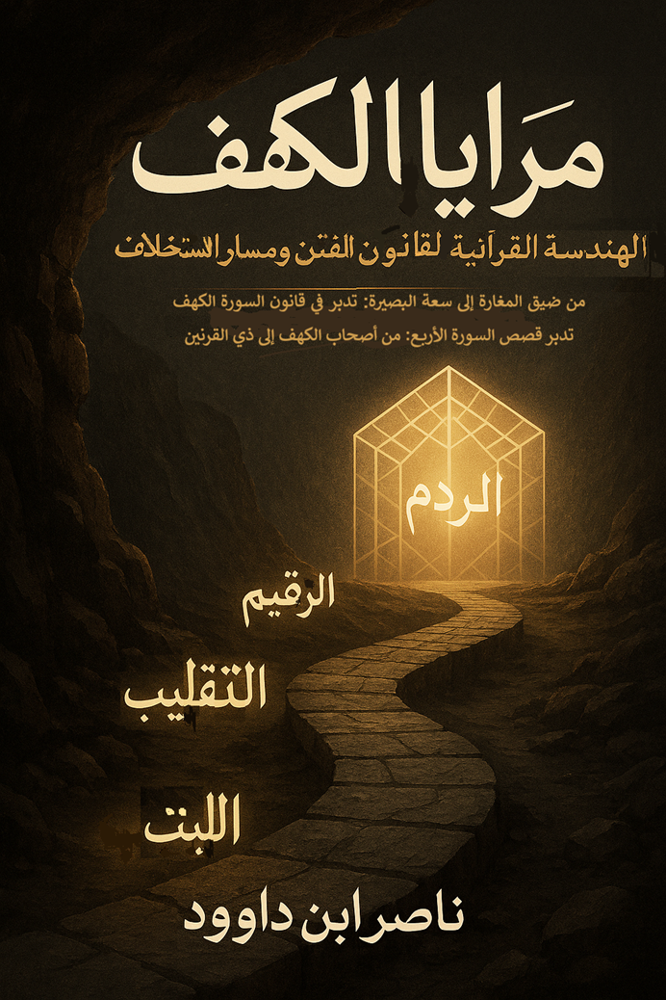

loading="lazy" width="300" height="400" decoding="async">الموضوعات الرئيسية
لمن هذا الكتاب؟
- طالبو التدبر العميق لسورة الكهف
- المهتمون بالتحليل اللغوي والرمزي للقرآن
- الباحثون عن فهم الفتن المعاصرة في ضوء الوحي
- الدعاة والمربون
- كل من يسعى لبناء وعي يقيني في زمن الشبهات
مقدمة الكتاب
من ضيق المغارة إلى سعة البصير
بسم الله الرحمن الرحيم، والحمد لله الذي أنزل على عبده الكتاب ولم يجعل له عوجاً، قيِّماً لينذر بأساً شديداً من لدنه ويبشر المؤمنين الذين يعملون الصالحات أن لهم أجراً حسناً. والصلاة والسلام على من أُوتي جوامع الكلم، وعلى آله وصحبه ومن تبع هداهم إلى يوم الدين.
أما بعد؛ فإن قصص القرآن الكريم ليست حكايات تُروى لتزجية الوقت، ولا أحداثاً تاريخية انقضت بذهاب شخوصها، بل هي بناءٌ مقصود، وهندسةٌ إلهية تُشكّل الوعي وتؤسس للإنسان القادر على عبور الفتنة دون أن يفقد بوصلته. إنها عبرة لأولي الألباب، لكنها أيضاً مسار تكويني ينتقل بالإنسان من الاضطراب إلى السكينة، ومن الخوف إلى التمكين.
ومن بين هذه القصص العظيمة، تبرز سورة الكهف بسردها المتدرج وقصصها الأربع الكبرى: أصحاب الكهف، وصاحب الجنتين، ورحلة موسى مع العبد الصالح، وذي القرنين والردم. غير أن تأمل ترتيبها يكشف أنها ليست قصصاً متجاورة، بل مساراً تصاعدياً دقيقاً؛ يبدأ بحفظ الإيمان في لحظة استضعاف، وينتهي بإقامة العدل في لحظة تمكين.
يأتي هذا الكتاب «مرايا الكهف: من الملجأ إلى الردم» ليكون رحلة تدبرية لا تقف عند ظاهر الحدث، بل تتقصّى البنية التي تنتظم السورة كلها. فهو لا يكتفي بالجمع بين التفسير الحرفي والرمزي، ولا بالتحليل النفسي واللغوي، بل يسعى إلى قراءة السورة بوصفها نموذجاً تطبيقياً للهندسة القرآنية في بناء الإنسان.
نسأل الله أن يفتح لنا أبواب الفهم في كتابه، وأن يجعل هذه الصفحات سبباً في انتقال القارئ من ضيق المغارة إلى سعة البصير، ومن الخوف من الفتنة إلى فقهها، ومن النجاة الفردية إلى الإصلاح الواعي.
والحمد لله رب العالمين.
أقسام الكتاب الرئيسية
١. الكهف كأنموذج إصلاحي
الأزمة والملجأ: لماذا فرَّ الفتية إلى الكهف؟
٢. اللغة المعمارية (أسرار اللبث)
دلالات اللبث والتقليب والكلب على العتبة
٣. عنف الرجم
الرجم الحسي والرمزي: من الحجارة إلى التهم
٤. نقود الزكاة
الدراهم الفضية ورمزية الطعام الأزكى
٥. ميتافيزيقا الزمن والأعداد
ثلاثمئة سنين وازدياد تسع: الحساب الكوني والنسبي
٦. كيمياء الوفاء (الكلب على العتبة)
قدسية المخلوق التابع وحارس الحرم
٧. من الكهف إلى السوق
العودة بالفضة النقية: منهج الإصلاح بعد العزلة
منهجية البحث
يعتمد الكتاب على مسارات متكاملة:
- المسار التفسيري: استحضار المعجزة بظاهرها كما تلقاها السلف.
- المسار النفسي: فهم الكهف كعزلة تكوينية تحفظ الإيمان.
- المسار الرمزي: قراءة الكهف مأوىً وجودياً والكتاب حصناً.
- المسار اللغوي: استنطاق المفردات القرآنية للكشف عن دقة التصوير.
- المسار البنائي: قراءة السورة كمعمار متكامل ينتظم في قانون رباعي للفتن.